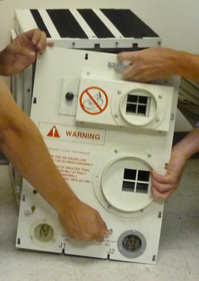

Illustration 2: Blower Box Motor Panel Removal – Handle with Two People

| NOTE: | To ensure a safe distance, make sure that the clear path
through which you will be moving the blower box is completely outside
the 200G line. The distance to the 200G line can be found in the Pre-Installation
Manual (PIM). (To open the PIM, from the Service Methods media navigate
to the “Pre-Installation” section and select the PIM corresponding
to the system on which you are working. Gauss plots can be found in
the section titled “MR Suite Minimum Room Size Requirements.”) THE 200G LINE MAY NOT BE WITHIN THE MINIMUM SERVICE AREA. IF THERE IS NOT ENOUGH ROOM TO MOVE THE BLOWER BOX OUTSIDE OF THE 200 GAUSS LINE, THE MAGNET MUST BE RAMPED DOWN PRIOR TO CONTINUING. |